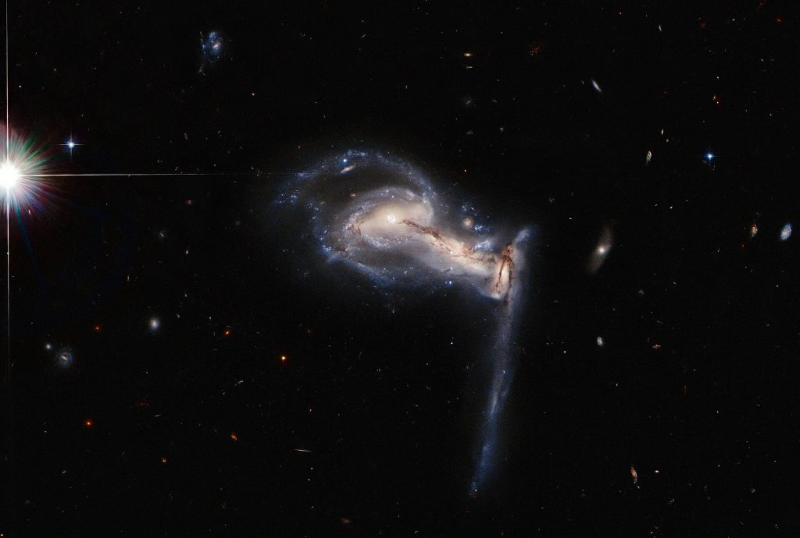
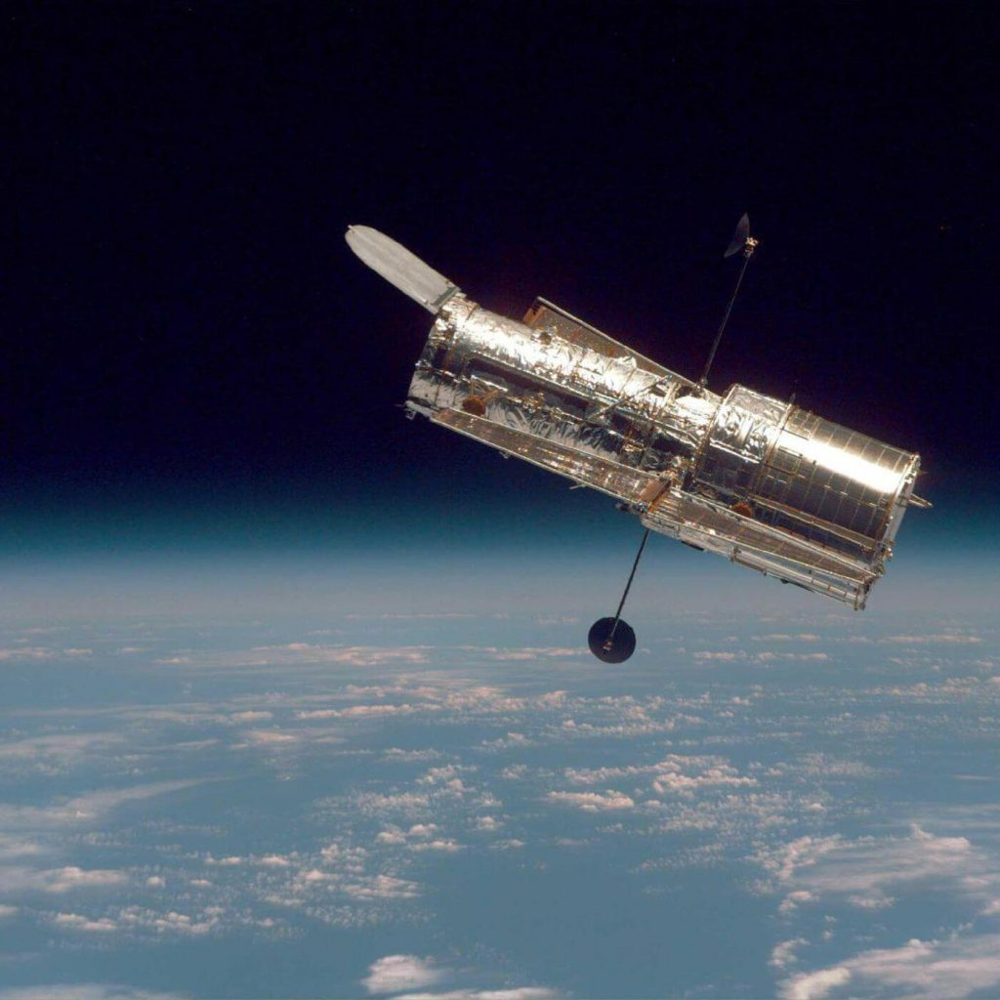

တိုက်ပွဲဆိုလို့ စတားဝါး (Star Wars) ရုပ်ရှင်တွေထဲကလို အာကသယာဉ်ပျံတွေ မောင်းနှင်ပြီး တိုက်ပွဲဝင်နေကြတာကို ပြောတာ မဟုတ်ပါဘူး။ ဂက်လက်ဆီကြီး ၃ ခု ဆုံမိကြတဲ့အချိန် ပြင်းထန်လှတဲ့ ဆွဲငင်အားတွေကြောင့် ဂက်လက်ဆီကို ဖွဲ့စည်းထားတဲ့ ကြယ်တွေ၊ ဓါတ်ငွေ့တိမ်တိုက်တွေကို တစ်စစီ ဆွဲဖြဲ ဆုတ်ဖွာ ပစ်နေတဲ့ ပုံကို အမိအရ ရိုက်ယူထားခြင်းပဲ ဖြစ်ပါတယ်။

ဒီ ဂယ်လက်ဆီ အပါအဝင် အခြား ထူးဆန်းတဲ့ ဂယ်လက်ဆီတွေရဲ့ ဓါတ်ပုံတွေကို Atlas of Peculiar Galaxies စာအုပ်မှာလဲ ဖော်ပြခဲ့ပါတယ်။ ဒီ Atlas of Peculiar Galaxies စာအုပ်ကို California Institute of Technology က ၁၉၆၆ မှာ စတင်ပြီး ထုတ်ဝေခဲ့တာ ဖြစ်ပါတယ်။ ဒီစာအုပ်မှာ ထူးဆန်းတဲ့ ပုံသဏ္ဍာန် ရှိတဲ့ ကြယ်စုပေါင်း ၃၃၈ ခုကို မှတ်တမ်းတင် ထားခဲ့ပါတယ်။ အခု နာဆာကနေ ထုတ်ပြန်လိုက်တဲ့ ပုံကတော့ ဒီ ဂယ်လက်ဆီကို နောက်ဆုံး ရိုက်ကူးထားတဲ့ ပုံရိပ်ပဲ ဖြစ်ပါတယ်။
ဟာဘယ် နက္ခတ်တာရာ မှန်ပြောင်းကြီးရဲ့ အချိန်က တန်ဖိုးရှိလွန်းလို့ တစ်စက္ကန့်တောင်မှ မလပ်ရအောင်၊ အလေအလွင့် မရှိအောင် ပညာရှင်တွေက အသုံးချကြပါတယ်။ ဒီ နက္ခတ်မှန်ပြောင်းကြီးရဲ့ လုပ်ငန်းဆောင်တာတွေကို ကွန်ပြူတာနဲ့ တွက်ချက်ပြီး အချိန်ဇယားဆွဲ အလုပ်လုပ်ကြ ရတာပါ။ ဒီကြားထဲက အားတဲ့ အချိန် စက္ကန့် အနည်းငယ်ကို အခုလို စိတ်ဝင်စားဖွယ် ဓါတ်ပုံလေးတွေ ရိုက်ပြီး ကမ္ဘာမြေကို ပြန်ပို့ပေးလေ့ ရှိပါတယ်။
အခုလို အလျင်းသင့်သလို ရိုက်ယူတဲ့ ဓါတ်ပုံလေးတွေဟာ စိတ်ဝင်စားဖွယ် ပုံရိပ်တွေ ပေးနိုင်ရုံ မက အသေးစိတ် လေ့လာသင့်တဲ့ ကြယ်တွေ နဲ့ ဂယ်လက်ဆီတွေ ကိုလဲ ရှာဖွေပေးနိုင်ပါတယ်” လို့ နာဆာက ပညာရှင် တစ်ယောက်က ပြောပါတယ် ခင်ဗျား။

Hubble Captures ‘Gravitational Tug-of-War’ Between Three Galaxies
Hubble Spots Squabbling Galactic Siblings